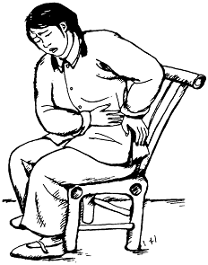

Señas de infección en los riñones o en la vejiga
Las infecciones de la vejiga o de los riñones pueden ser peligrosas para la madre. Si no se tratan inmediatamente, tambien pueden causar que la madre comience el trabajo de parto antes de tiempo.
Señas de una infección de la vejiga:
- Sentir la necesidad constante de orinar, aun después de haber orinado
- Dolor o sensación de ardor durante o después de haber orinado
- Dolor en la parte baja del abdomen, detrás de la parte frontal de la pelvis
Señas de una infección de riñón:
- Dolor en la parte baja de la espalda, a veces en los costados
- Fiebre
- Orina turbia o con sangre
- Sentirse muy débil o mareada
- La mujer puede también tener las señas de una infección de la vejiga